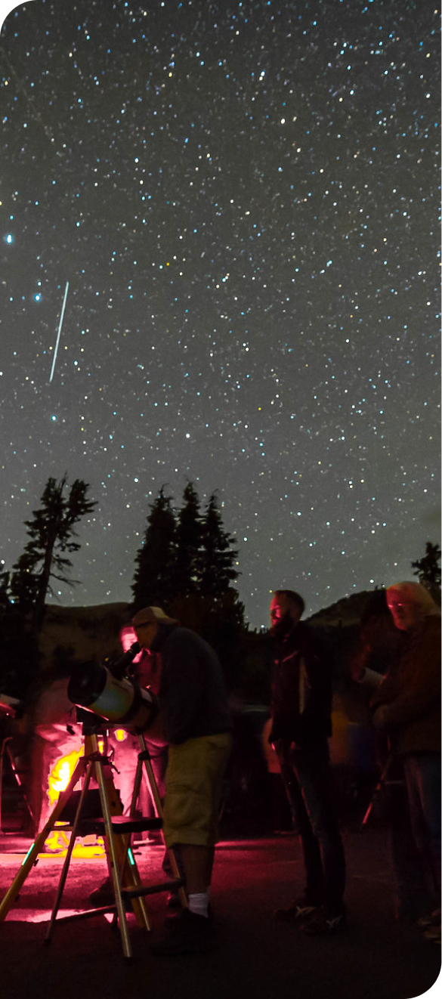

Welcome to Bryce Canyon Annual Astronomy Festival
Have you ever wondered what it was like to sightsee at Bryce Canyon, day and night? Have you ever experienced the new moon in June? Come to Bryce Canyon for the annual Astronomu festival! This festival features family-friendly activities and evening programs, as well as constellation tours! The 2022 festival will feature guest speakers Dean Regas from the Cincinnati Observatory and recent Grand Canyon Astronomer in Residence as well as Bill Ochs, James Webb Space Telescope Project Manager & Begoña Vila, Webb Instrument Systems Engineer!

Dean has been the Astronomer for the Cincinnati Observatory since 2000. He is a renowned educator, author, national popularizer of astronomy and an expert in observational astronomy. From 2010-2019 Dean was the co-host of the PBS program Star Gazers. He is the author of five books including "Facts From Space!" and "100 Things to See in the Night Sky".
READ MOREDr. Begoña Vila is an Instrument Systems Engineer for the James Webb Space Telescope at NASA's Goddard Space Flight Center in Greenbelt, Maryland. She supported Webb's cryogenic testing at NASA's Johnson Space Center in Houston in 2017, she will support testing for the observatory throughout 2018, and she is also helping plan Webb's commissioning.
READ MOREBill Ochs has 30+ years of experience in the aerospace industry. He began his career in 1979 with the Bendix Guidance Systems Division in Teterboro, N.J. as an electronics/software engineer, developing the flight software for the Hubble Space Telescope safing system. He has worked in both private industry and for NASA and is currently the Project Manager for the James Webb Space Telescope.
READ MOREDo you want to get a better insight on what you want to do at the festival? Click each tab to look at the daytime and evening schedules so that you could plan your day accordingly.
Daytime activities include activity tents, solar telescopes, and other opportunities open to the public at the Visitor Center between 11 a.m. and 4 p.m. each day of the festival.
Planetarium Educator Dr. Amy Sayle takes you on a trip through the constellations and the eternal legends they tell. Help act out one of the greatest star stories ever told. Location given at sign-up. This program requires reservations, which can be made same-day at the Visitor Center Information Tent beginning at 8 a.m. until capacity is reached.
Venus and Mars are in our planet's backyard, but how much do you really know about them? Join Ranger Emma on an exploration of these two planets. Discover what makes these planets unique, as well as what makes them surprisingly similar to our own planet. From rivers of lava to ice caps, let's get to know our backyard a little better. Location given at sign-up. This program requires reservations, which can be made same-day at the Visitor Center Information Tent beginning at 8 a.m. until capacity is reached.
Shuttle hours will be extended for the festival. As parking at the Visitor Center and evening program locations will be limited, we advise parking at the Shuttle Station or boarding from your campground in the park. Shuttles will run until 1 a.m. Volunteers from the Salt Lake Astronomical Society point their telescopes at some of the night sky's most spectacular sights. White-light flashlights are prohibited due to their negative impact on night vision.
Family Friendly activities in the Visitor Center plaza including booths from the James Webb Space Telescope team and University of Utah.
Ever wondered about the "anatomy" of black holes, how they're formed, what types exist, and what would happen if you came a little too close? Join Paul Ricketts, director of University of Utah's South Physics Observatory, to talk about how relativity and gravity explains them, how we detect them, and how they affect space-time and ultimately, you. Location given at sign-up. This program requires reservations, which can be made same-day at the Visitor Center Information Tent beginning at 8 a.m. until capacity is reached.
When Carl Sagan once said, "The cosmos is within us. We are made of star-stuff," he meant it literally! Nearly all the atoms that make up us, and everything around us, are created in the fiery death of exploding stars. Samantha will talk about how these elements are made, how we learn about them and what's left to be uncovered. Location given at sign-up. This program requires reservations, which can be made same-day at the Visitor Center Information Tent beginning at 8 a.m. until capacity is reached.
Shuttle hours will be extended for the festival. As parking at the Visitor Center and evening program locations will be limited, we advise parking at the Shuttle Station or boarding from your campground in the park. Shuttles will run until 1 a.m. Volunteers from the Salt Lake Astronomical Society point their telescopes at some of the night sky's most spectacular sights. White-light flashlights are prohibited due to their negative impact on night vision.
Family Friendly activities in the Visitor Center plaza including booths from the James Webb Space Telescope team and University of Utah.
Planetarium Educator Dr. Amy Sayle takes you on a trip through the constellations and the eternal legends they tell. Help act out one of the greatest star stories ever told. Location given at sign-up. This program requires reservations, which can be made same-day at the Visitor Center Information Tent beginning at 8 a.m. until capacity is reached.
Want to know the name of that star? How do I find constellations like Orion, Gemini, and Taurus? When can I see the planets? Based on his popular book, astronomer Dean Regas will show you the basic tips and tricks to identifying stars, constellations, planets, and more in the night sky. You'll soon be on your way to finding 100 Things in the Night Sky. Location given at sign-up. This program requires reservations, which can be made same-day at the Visitor Center Information Tent beginning at 8 a.m. until capacity is reached.
Shuttle hours will be extended for the festival. As parking at the Visitor Center and evening program locations will be limited, we advise parking at the Shuttle Station or boarding from your campground in the park. Shuttles will run until 1 a.m. Volunteers from the Salt Lake Astronomical Society point their telescopes at some of the night sky's most spectacular sights. White-light flashlights are prohibited due to their negative impact on night vision.
Family Friendly activities in the Visitor Center plaza including booths from the James Webb Space Telescope team and University of Utah.
Rocket through space and sail among billions of stars and galaxies. Utilizing some amazing simulation software Dean Regas guides you through the mind-boggling scale of the universe. Along the way you’ll stop at the Moon and individual planets. Then you’ll make the jump to light speed and head to interstellar space and see all the galaxies in the universe. Don’t worry, he’ll have you back home in time for dessert. Location given at sign-up. This program requires reservations, which can be made same-day at the Visitor Center Information Tent beginning at 8 a.m. until capacity is reached.
An in-depth talk about the engineering and science behind the newly launched James Webb Space Telescope. Learn about the Webb in-space deployments and the first images coming this summer! Location given at sign-up. This program requires reservations, which can be made same-day at the Visitor Center Information Tent beginning at 8 a.m. until capacity is reached.
Shuttle hours will be extended for the festival. As parking at the Visitor Center and evening program locations will be limited, we advise parking at the Shuttle Station or boarding from your campground in the park. Shuttles will run until 1 a.m. Volunteers from the Salt Lake Astronomical Society point their telescopes at some of the night sky's most spectacular sights. White-light flashlights are prohibited due to their negative impact on night vision.

Bryce Canyon National Park lies on the eastern edge of the Paunsaugunt Plateau in south central Utah. Bryce Canyon National Monument (administered by the U.S. Forest Service) was originally established on June 8, 1923 to preserve the “unusual scenic beauty, scientific interest, and importance.” On June 7, 1924, the monument’s name was changed to Utah National Park and it was transferred to the National Park Service. On February 25, 1928 Utah National Park was changed to Bryce Canyon National Park. Subsequent legislation enlarged the park to its current size of 35,835 acres.
Read MoreEach night of the festival, shuttle service will continue to limited locations between 8 p.m. and 12:15 a.m. Parking will be limited at Evening Program and Telescope locations, so we strongly recommend parking at the Shuttle Station in Bryce Canyon City (2 miles north of park entrance) and riding the Star Shuttle into the park. Shuttles arrive at each stop every 15 minutes. Use of the Star Shuttle is free with park admission.
Daytime activities include activity tents, solar telescopes, and other opportunities open to the public at the Visitor Center between 11 a.m. and 4 p.m. each day of the festival.
Evening Programs are the only festival events that require a free ticket. Pick up a ticket the day of the program at the Visitor Center Information Desk. Programs are held at 8:30 p.m. and 9 p.m. each night, and the location is shared when you pick up your ticket. See Schedule of Events above for program details.
This year's telescope site will be located within the park across the street from the Visitor Center. It will be open each night of the festival from 10 p.m. to midnight and is open to the public. We are excited to share the night sky with our visitors, and thank our partners at the Salt Lake Astronomical Society and University of Utah for their participation, expertise, and generosity with their telescopes.
In the event that weather requires cancelling telescope viewing, we will post an update no later than 9 p.m. to our Twitter page. No account is needed to view the page.
Parking at the Visitor Center will be very limited, so we strongly recommend parking at the Shuttle Station and riding the Star Shuttle into the park. If you're staying at a park campground or the Lodge, you can pick the shuttle up there. The last shuttle bus leaving the Visitor Center will depart each night around 12:15 a.m. and we'll ensure everyone gets where they need to go.
Disabled parking spaces are available at the Visitor Center and the Telescope site. Star shuttles are also fully accessible. If Visitor Center spaces are full, a ranger can direct you to disabled parking spaces at the turn for North Campground (first left past Visitor Center).